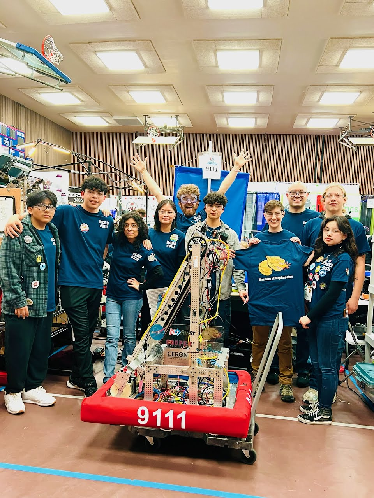

About Us
Rancho Cotate High School started its first-ever robotics team in 2022. Since then we have recruited 10 devoted members, competed in the global FIRST Robotics competition, and engaged in community events. Members of our FIRST Robotics team #9111 are mentored by 3 local industry professionals. Our mission is not only to build robotics but to also embrace a community mindset. Our team is committed to fostering, cultivating, and preserving a culture of equity, diversity, and inclusion. Regardless of race, gender, and even technical background, we are open to any students who want to join in on growing the team.
Our Team
About this website
This website is meant to serve as a design template for my robotics team's own website. I wanted to compete with website builders and compare what I can do when going against a website builder. It turns out that making websites is a long process, who would've known? Though I get a bigger sense of freedom and creativity when making my own website with basic HTML and CSS, website builders are easier to handle, but that is not an excuse not to learn and use HTML, CSS, and JAVA to make a website. Having the freedom to create your own website with these languages is like nothing a website builder can do. My name is Alex Nava! I am currently a high school student and I enjoy computer science. I love creating websites, robots, and video games. Thank you!